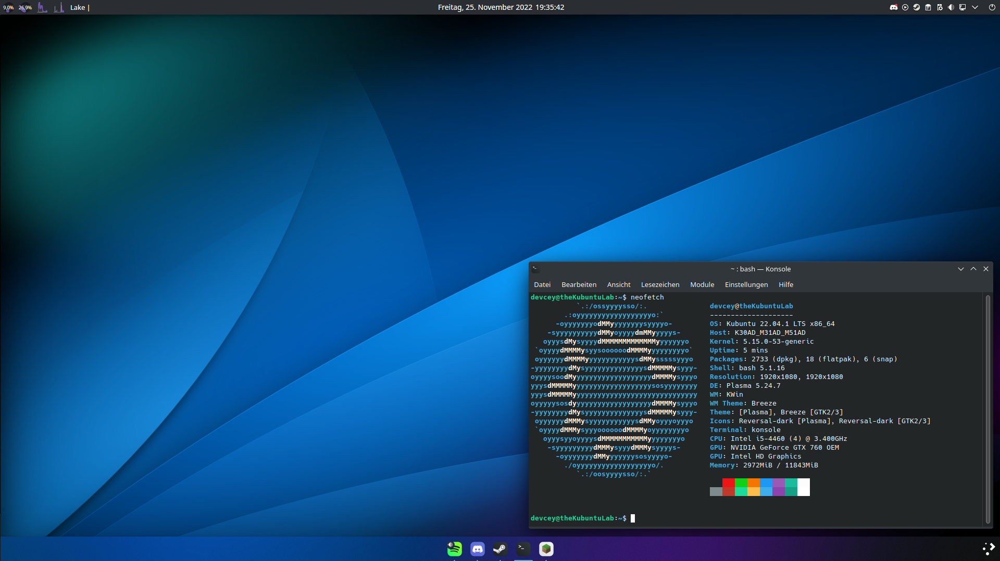
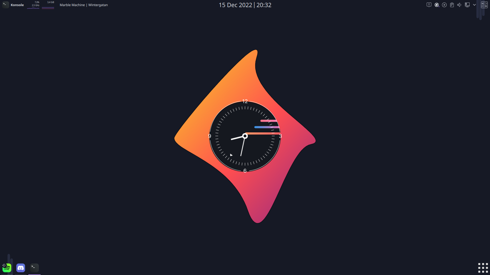
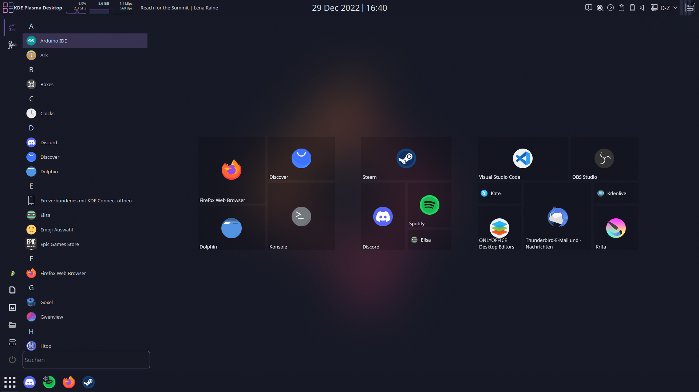
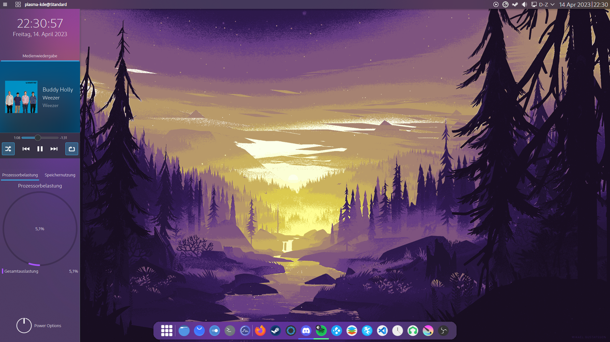
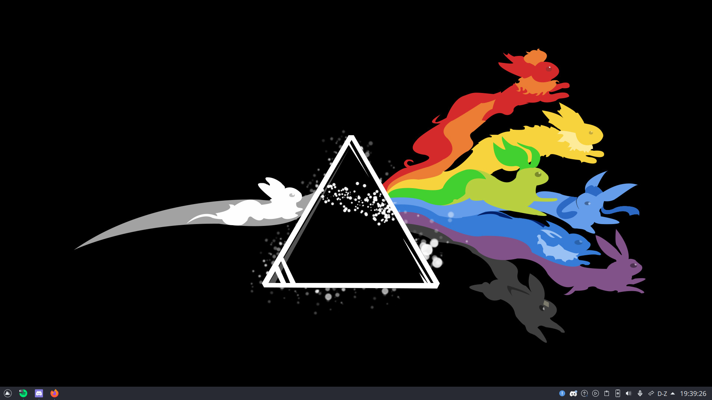

Desktop layouts
I use Linux. One of the things I love about it is the customizability of my desktop. I change it around every month or so. Which is why I have decided on making a little gallery of all my desktops. Enjoy
First Layout
Was basically one of my first layouts on Linux. I had that bottom dock which had my open applications and that top dock which had other nice information. Including the currently playing song.
Layan
Based around the Layan theme. It's similar to the first layout though. The top dock is wider in this one though. Also got myself an application menu similar to the start menu of Windows8. I used a similar one back in Windows 10. (it has the option to use a fullscreen start menu)
 Theyel
I also called it Firewatch Valley. I played around with the colours in this theme, but have also added the side panel which displays some nice stuff and where I can shut down my PC.
Dark Side of the Eevee
I love Pokémon. This theme is based on a nice wallpaper I found on the World Wide Web. I also started using the Qogir theme and I love it. I have also removed the top dock and returned to a layout similar to Windows.
